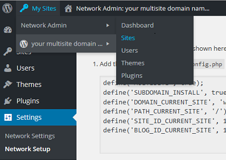

Installing Wordpress Multisite on a LEMP server for Debian and Ubuntu.
Set Up WordPress Multisite in Nginx - Debian, Ubuntu
Difficulty: 2
Time: 20 minutes
You can manage multiple sites under one WordPress installation. This setup is a great convenience if you manage many sites completely independent of each other (or sites that are related, such as subdomains), as you'd otherwise have to log into different WordPress accounts.
For this article, we'll walk through setting up WordPress multisite for a primary domain and its subdomains.
We'll set up WordPress on an Ubuntu® (14.04, 14.10) or Debian system. The steps are for a non-root user with sudo privileges.
We'll use these example sites:
| Site 1
| coolexample.com (primary) |
| Site 2 |
coolexampleproduct.com
product.coolexample.com |
| Site 3 |
coolexamplecompany.com
aboutus.coolexample.com |
Prerequisites
You'll need a Linux, Nginx®, MySQL, and PHP (LEMP) stack configured. Make sure that Nginx, MySQL, and PHP are up and running. For instructions, see the following:
As you install the software, make a note of your MySQL root account (administrator) password. You'll need it for these tasks.
You'll also need to set up the DNS for all your domains. Point them to the IP that will host your WordPress. Make sure to set up wildcard DNS if you're creating subdomains. To point your domain name to a cloud server, see Point your domain name to a server.
Create the Wordpress configuration file
After you configure WordPress, transfer the files to your root directory so that the application can serve content to your site visitors.
- Create the document root directory. We'll use
/usr/share/nginx/wordpress for this article since /usr already has the read-write permissions you need.
sudo mkdir -p /usr/share/nginx/wordpress
- Remove the default site from the sites-enabled directory. (We'll be doing more with this folder later.)
sudo rm /etc/nginx/sites-enabled/default
Create an NGINX virtual host file with your WordPress information
-
Create a new file inside the sites-available directory.
sudo vim /etc/nginx/sites-available/wordpress
- This is a blank file. Paste this whole block of code, with your own details for server_name and root.
server {
listen [::]:80 ipv6only=off;
server_name coolexample.com product.coolexample.com aboutus.coolexample.com;
root /usr/share/nginx/wordpress;
index index.php index.html index.htm;
location / {
try_files $uri $uri/ /index.php?$args ;
}
location ~ /favicon.ico {
access_log off;
log_not_found off;
}
location ~ \.php$ {
try_files $uri /index.php;
include fastcgi_params;
fastcgi_pass unix:/var/run/php5-fpm.sock;
}
access_log /var/log/nginx/$host-access.log;
error_log /var/log/nginx/wpms-error.log;
} - Save and close.
Enable your WordPress site
Create a symlink to reference your new location.
- Link your
sites-enabled directory to this new file.
sudo ln -s /etc/nginx/sites-available/wordpress /etc/nginx/sites-enabled/wordpress
- Run a config test.
sudo service nginx configtest
- If the config test returns OK, restart nginx.
sudo service nginx restart
Create a MySQL database and administrator for WordPress
Set up your MySQL database with an administrator so that WordPress has a place to store all your site and user information.
All MySQL code statements must end with a semi-colon (;).
- Log into your MySQL admin account.
mysql -u root -p
- At the prompt, enter your MySQL root password.
- At the MySQL prompt, create your WordPress database. For this article, we'll use the database name "wordpress."
CREATE DATABASE wordpress;
- Create the database administrator account, and set the user's credentials. We'll use "wordpressadmin" as the example user name, and "wordpresspassword" as the password.
CREATE USER wordpressadmin@localhost IDENTIFIED BY 'wordpresspassword';
As a best security practice, create a strong password. Keep your user name and password handy, as you'll need them later.
- Give, or grant, your admin permissions to the database.
GRANT ALL PRIVILEGES ON wordpress.* TO wordpressadmin@localhost;
GRANT is one of the account management statements that the MySQL server notices and loads into memory right away. Therefore, a manual reload/restart should not be necessary. However, if you like, you can check the permissions using SHOW GRANTS:
SHOW GRANTS FOR 'wordpressadmin'@'localhost';
- If the privileges don't take effect, flush the privileges to activate the user.
FLUSH forces a reload of the cache.
FLUSH PRIVILEGES;
- Exit MySQL to return to your normal command prompt.
exit
You're finished!
Download WordPress
Your system is now ready to install WordPress into your directory. WordPress is available in a tar.gz or zip format. We'll get the tar.gz file.
- Download the WordPress files from the official site using
wget:
cd ~
wget http://wordpress.org/latest.tar.gz
This URL always links to a compressed file of the latest stable version of WordPress.
- Extract, or untar, the application directory.
tar -xf latest.tar.gz
This command creates a directory called "wordpress" in your home directory.
- Move the files into the WordPress document root.
sudo mv wordpress/* /usr/share/nginx/wordpress/
- Change ownership to the user
www-data so that you'll be able to work with WordPress uploads, plugins, and themes.
sudo chown -R www-data:www-data /usr/share/nginx/wordpress
Create and modify the WordPress configuration file
- Back in the terminal, navigate to your WordPress document root.
cd /usr/share/nginx/wordpress
- List files using
ls to make sure that wp-config-sample.php is among them.
- Copy the sample configuration file.
sudo cp wp-config-sample.php wp-config.php
- Open your configuration file for editing.
sudo vim wp-config.php
- In the file, look for the following section of code (starting with "MySQL settings"), and enter your corresponding values of the three
DB_ variables (database name, database username, mysql root password) with the credentials you created earlier.
// ** MySQL settings - You can get this info from your web host ** //
/** The name of the database for WordPress */
define('DB_NAME', 'wordpress');
/** MySQL database username */
define('DB_USER', 'wordpressadmin');
/** MySQL database password */
define('DB_PASSWORD', 'wordpresspassword');
- Farther down in the file, find the line
/* That's all, stop editing! Happy blogging. */ and add these lines:
/* Multisite settings */
define( 'WP_ALLOW_MULTISITE', true );
- Save and close the file.
- Restart Nginx.
sudo service nginx restart
Install WordPress
Now you can access the WordPress web interface.
- In your web browser, enter your primary domain name. In our example, that's
http://coolexample.com.
(If the Nginx default page displays, append
/wp-admin/ to your URL.)
You may get an introductory page. If so, click Let's go! to continue.
- On the next screen, fill in your WordPress MySQL database credentials.
You can leave the Database Host as is (localhost), since that's what we defined, and Table Prefix as wp_.

- Click Submit.
You may get a "run the install" page or the following page displaying the error message "Sorry, but I can't write the wp-config.php file." Not to worry! In either case, STOP. To avoid being trapped in a single-site installation, you must create our wp-config file now.

Continue setup in WordPress web interface
- Return to your browser to continue the WordPress web installation. You should be taken to the WordPress 5-minute install screen.

- Choose a user name and password. Use the password supplied if you like; just be sure to save it somewhere handy.
- Click Install WordPress.
If at any point during web installation you get an error such as a 404 or 504 page, reload the wp-admin page (http://coolexample.com/wp-admin/).
Enable multisite
- In your browser, continue the WordPress web installation. Click on Tools on the left-hand panel, then Network Setup.
- Because we're working with sub-domains, choose sub-domains
and change your Network Title if you like. Click Install.
- In the next Network Setup screen, copy the
wp-config code in the first section. We'll paste this into our configuration file.
For Nginx, there's no htaccess file. We'll ignore the .htaccess code.

The code resembles this:
define('MULTISITE', true);
define('SUBDOMAIN_INSTALL', true);
define('DOMAIN_CURRENT_SITE', coolexample.com');
define('PATH_CURRENT_SITE', '/');
define('SITE_ID_CURRENT_SITE', 1);
define('BLOG_ID_CURRENT_SITE', 1);
- In your terminal, pull up your
wp-config file.
sudo vim /usr/share/nginx/wordpress/wp-config.php
- Find the section torwards the end of the file you were modifying, and paste the code you copied right before
/* That's all, stop editing! Happy blogging. */.
- Save and close the file.
Create additional sites or subdomains
- Back in your browser, click Log In at the bottom of the page or simply reload the page (Log back in if your password isn't saved.)
At the top, there's now a "Network Admin: (your domain name)" option in the menu bar.
- To the left of that on the top navigation bar is My Sites. Hover/mouse over it, and from the drop-down menu, select Network Admin, then Sites

At the top, there should now be a Network Admin: (your domain name) option in the menu bar.
- On the main screen, next to Sites, click Add New.
- Fill out your first subdomain information.
- Click Add Site to finish.
- Repeat for all your subdomains.
Next Steps
Congratulations! You have successfully set up a WordPress multisite. You'll be able to manage all your sites from your WordPress panel.
There's much you can do from here. One option is to map your sub-domains to external domains. See
Set up WordPress Domain Mapping - Debian, Ubuntu for instructions.